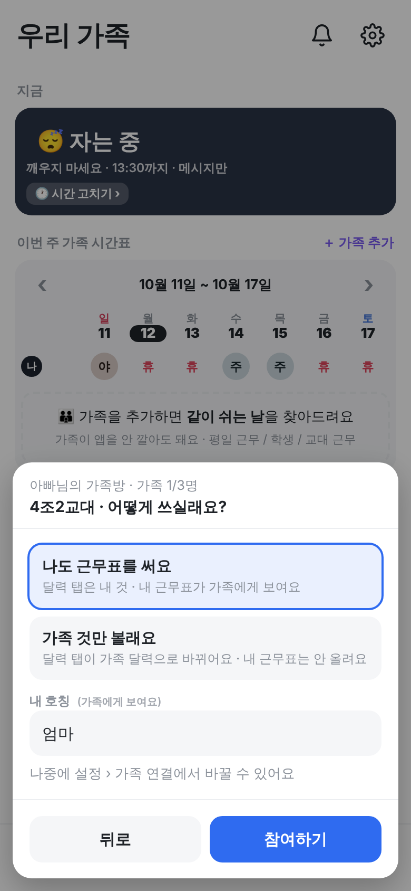
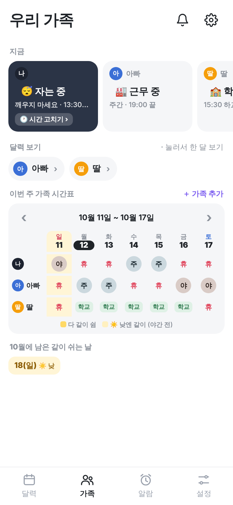
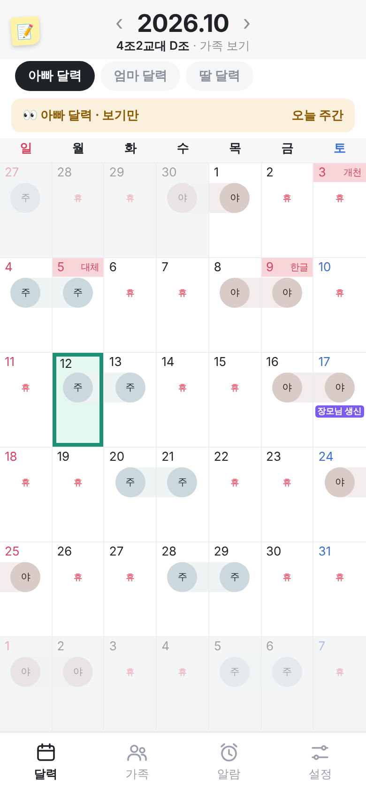
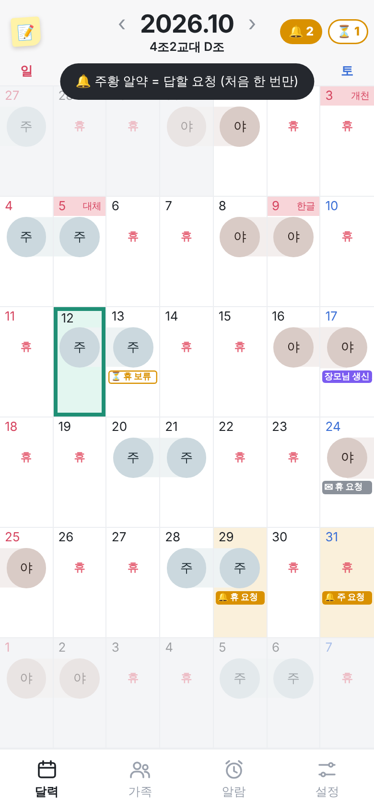
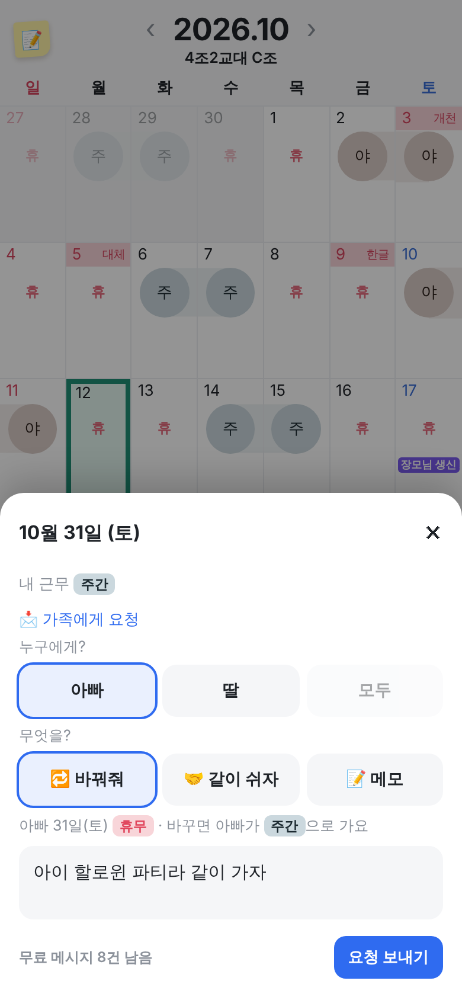
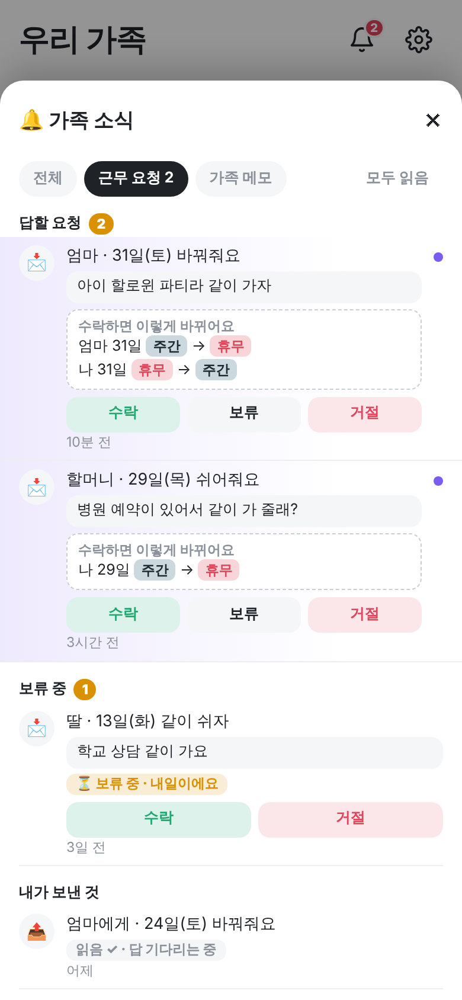
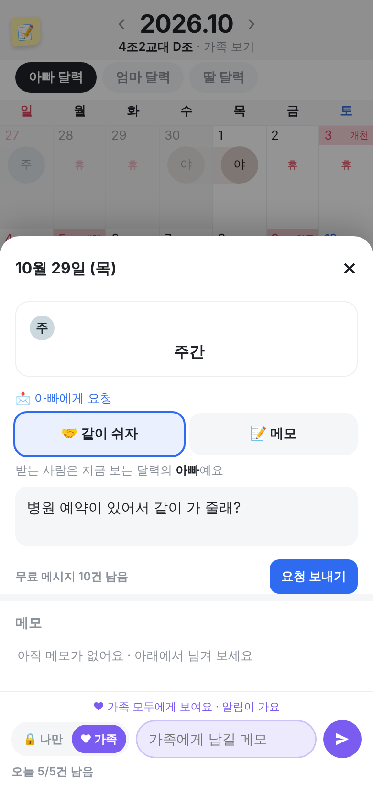

실제 앱 화면 위에 그린 시안이에요. 폰 주인(아빠 · 엄마 · 할머니)을 위에 적었어요. 알람은 계속 각자 폰 안에서만 울려요.



고침 1 달력 아래 설명 줄 없음 (처음 한 번만 안내) · 고침 2 요청 목록은 지금 있는 🔔 가족 소식 창을 그대로 씀 · 고침 3 받는 사람 칩 + 사람에 따라 요청 종류가 달라짐 · 고침 4 수락하기 전에 결과 미리보기



